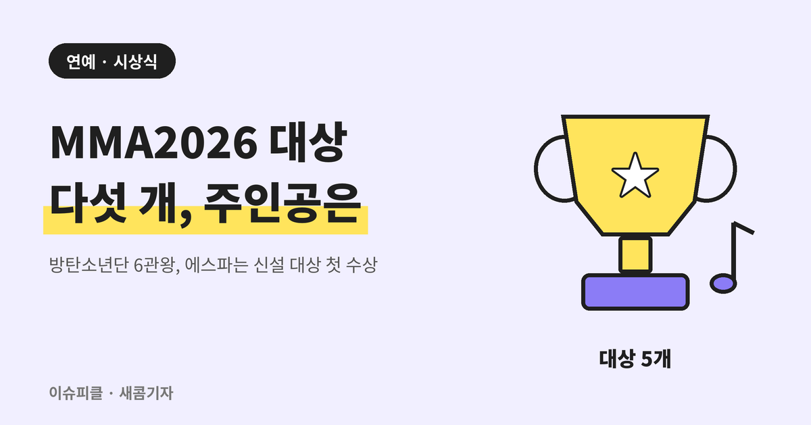
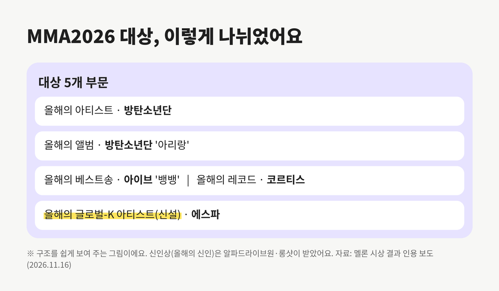
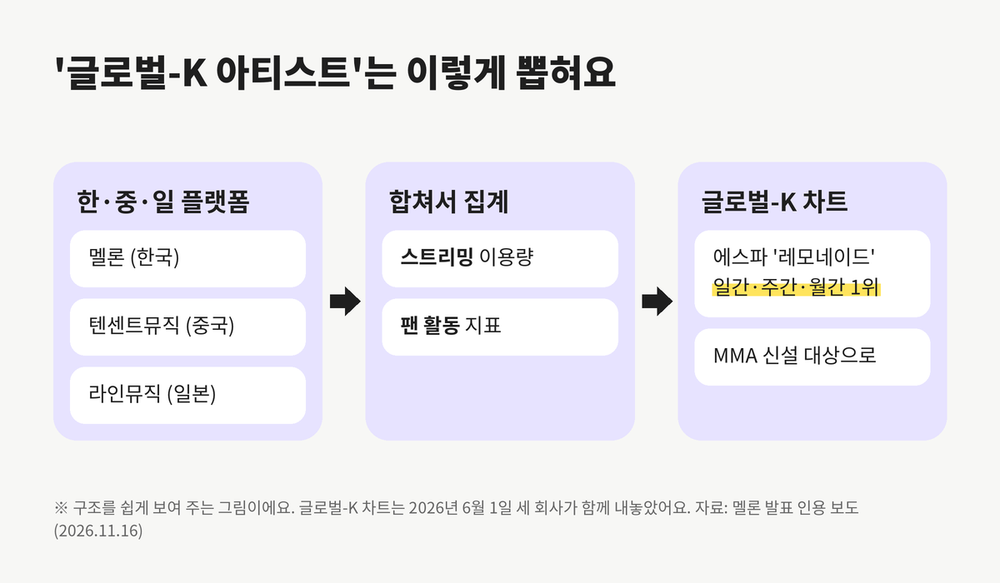
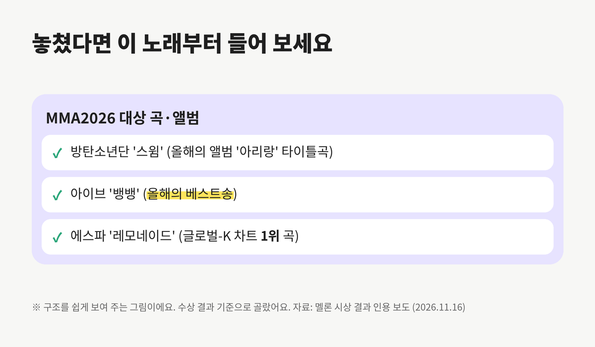

무슨 일이야?

멜론의 연말 시상식 MMA2026이 올해 처음으로 이틀에 걸쳐 열렸어요. 대상만 다섯 개라 누가 무엇을 받았는지 헷갈리기 쉬워요.
'올해의 아티스트'와 '올해의 앨범'(정규 5집 '아리랑')은 방탄소년단이 받았어요. '올해의 베스트송'은 아이브의 '뱅뱅', '올해의 레코드'는 코르티스, 새로 생긴 '올해의 글로벌-K 아티스트'는 에스파에게 돌아갔어요. 신인상인 '올해의 신인'은 알파드라이브원과 롱샷이 함께 받았어요.

멜론이 중국 텐센트뮤직, 일본 라인뮤직과 함께 올해 6월 내놓은 '글로벌-K 차트'를 바탕으로 주는 상이에요. 이 차트는 세 나라 플랫폼의 스트리밍에 팬 활동 지표까지 더해 집계해요. 에스파는 정규 2집 타이틀곡 '레모네이드'로 이 차트에서 일간·주간·월간 1위를 했어요.

왜 화제야?
방탄소년단은 3월 정규 5집 '아리랑'을 냈어요. 2022년 6월 'Proof' 이후 3년 9개월 만이에요. 타이틀곡 '스윔'은 발매 1시간 만에 멜론 톱100 1위에 올랐고, 수록곡 14곡이 모두 차트에 들었어요. 멤버들은 월드투어 일정으로 시상식에 오지 못하고 영상으로 소감을 전했어요. 베스트 프로듀서상은 빅히트 뮤직 김현정 부대표가 받았어요.
앞으로 볼 점
대상을 받은 곡과 앨범부터 들어 보면 올해 K팝 흐름이 한눈에 보여요. 방탄소년단 '아리랑'의 타이틀곡 '스윔', 아이브 '뱅뱅', 코르티스의 'REDRED', 에스파 '레모네이드'예요. 베스트 솔로상은 여자 부문 최예나, 남자 부문 임영웅이 받았어요. 전체 수상자는 멜론 공식 발표에서 확인할 수 있어요.

새콤기자 · 긴 기사도 새콤하게 세 줄로 🥒
아래 근거 기사를 바탕으로 정리했어요.